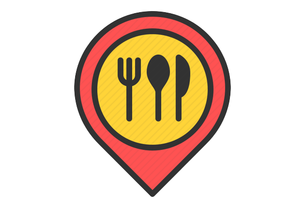

<ion-content>
  <ion-row class="info-row" >
    <ion-col size="2" class="ion-padding-start">
      
    </ion-col>
    <ion-col size="8">
      <ion-text color="dark">
        <span>Busca tu restaurante ideal en:</span><br>
        <b>¡Granada!</b>
      </ion-text>
    </ion-col>
    <ion-col size="2">
      <ion-button fill="clear" (click)="userProfile()">
        <ion-icon name="person-outline" slot="icon-only" color="tertiary" ></ion-icon>
      </ion-button>
    </ion-col>
  </ion-row>
  <!-- <ion-row class="sticky-row">
     <ion-col size="12">
       <ion-text class="ion-padding-start" color="medium">
         Granada</ion-text>
     <ion-searchbar placeholder="Busca tu restaurante favorito"></ion-searchbar>
    </ion-col>
  </ion-row>-->
  <ion-text color="dark"><b style="padding-left: 15px ">Guia de uso</b></ion-text>
  <ion-slides [options]="tipsOpts">
    <ion-slide >
      
      </ion-slide>
    <ion-slide>
      
    </ion-slide>
    <ion-slide>
      
    </ion-slide>
    <ion-slide>
      
    </ion-slide>
  </ion-slides>
  <ng-template #placheolder_avatar>
    <div class="fallback">
      
    </div>
  </ng-template>
  <ion-text color="dark"><b style="padding-left: 15px ">Restaurantes</b></ion-text>
  <ion-slides [options]="restOptions">
    <ion-slide *ngFor="let rest of restaurantList;" class="featured-slide" (click)="goToDetails(rest.aId)">
      
      <div class="info">
        <ion-text color="dark"><b>{{rest.nameRestaurant}}</b></ion-text>
        <span>
          <ion-icon name="location-outline"></ion-icon>{{rest.street+ ', ' + rest.codPostal +', '+ rest.city}}
        </span>
      </div>
    </ion-slide>
  </ion-slides>
</ion-content>

